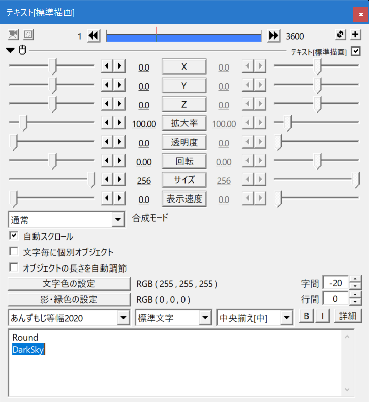
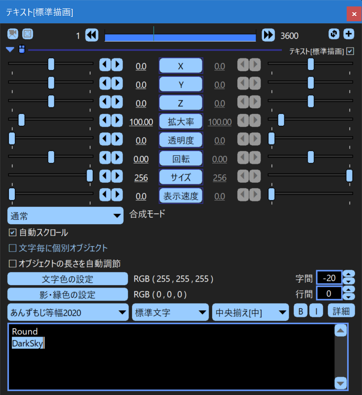

蛇色の AviUtl プラグイン
私が作成した AviUtl のプラグインの一覧です。
DarkenWindow - 黒窓 (くろまど)
AviUtl のスキン (UI のデザイン) を変更します。

UniteWindow - UniteWindow
AviUtl の各ウィンドウを一つのウィンドウにまとめます。
UniteWindowと出会ったおかげで僕のaviutlがいろんなプラグインでパワーアップしました(ついでにaviutlを一から入れなおした)
— 風音 琳@(無期限配信活動休止中) (@KazaneRin_v) May 8, 2022
僕形から入ってそれで満足する人間だから編集してないけど(プラグイン入れる前の編集データ読み込んでるだけ) pic.twitter.com/xdFejSBZzK
DragFilter - フィルタドラッグ移動
設定ダイアログのフィルタをドラッグして移動できるようにします。
最近のAviU界隈の魔改造ブームに全然ついていけないけれど、ひとまずワイドウィンドウとフィルタドラッグ移動が共存できるようになってたのでとても助かった。 pic.twitter.com/jAG1spsB8K
— シプリペ (@kypris_pedion) February 23, 2022
CopyFilter - フィルタのコピペ
設定ダイアログのフィルタをコピペできるようにします。
SelectFavoriteFont - お気に入りフォント選択
よく使うフォントやお気に入りフォントを選択できるようにします。
SelectEasing - イージング簡単選択
イージング番号を画像から選択できるようにします。
蛇色氏の「イージング選択プラグイン」
— inea / イネア (@i_ne_a) March 20, 2022
＋
蝙蝠の目氏の「イージング設定時短プラグイン」#AviUtl https://t.co/4syrTGd66jhttps://t.co/N43rx44VUM pic.twitter.com/TObLIelyCK
ShowWaveform - アイテム内音声波形
音声波形をアイテム内に表示します。
AdjustLastFrame - 最終フレーム自動調整
最終フレームが最後のオブジェクト位置になるように自動的に調整します。
ObjectExplorer - オブジェクトエクスプローラ
簡易エクスプローラを表示してエイリアスファイルを使いやすくします。
OptimizeEditBox - エディットボックス最適化
主にエディットボックスの処理を最適化します。
BigDialog - ダイアログ巨大化
ダイアログのサイズを調整してコントロールが見切れないようにします。
ManyView - 複数ビューア
複数のフレーム画像ビューアを表示します。
SetZoom - ズーム変更
タイムラインのズーム値を指定された値に変更します。
Toumei - 拡張編集透明化
拡張編集ウィンドウと設定ダイアログを透明化します。